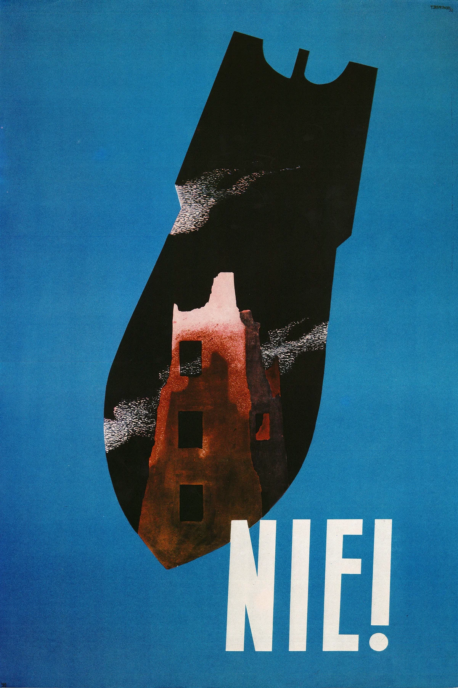

見るポイント
青い空を横切る黒い形は、遠目には爆弾に見えます。その中をのぞくと、窓だけが残った建物が見えます。右下の「NIE!」（ノー！）という一言が、二つの形をどう結びつけているでしょう。
作品・制作の例3件を紹介しています。実作品画像1点、参照・関連画像0点。画像の収集は継続中です。
ポスター制作の潮流（ひとつの学校名ではない）
Polish Poster School
映画や演劇を、一枚の絵でどう伝えるでしょう。ポーランド・ポスター派は、物語をそのまま描くより、手描きの形や思いがけない組み合わせで見る人に考えさせた、ポスター制作の潮流です。名前に「派」とあっても、全員が同じ描き方をした団体ではありません。
実作品を見る

画像を表示できませんでした。下の出典ページで確認できます。
タデウシュ・トレプコフスキ / 1952
石版印刷のポスター。掲載図版は1978年のポスター集をデジタル化したもの。 ／ 図版はニューヨーク州立大学バッファロー校図書館のポーランド・コレクション（LIB-009-03）。ニューヨーク近代美術館にも同じデザインのポスターを所蔵（626.1990）。
青い空を横切る黒い形は、遠目には爆弾に見えます。その中をのぞくと、窓だけが残った建物が見えます。右下の「NIE!」（ノー！）という一言が、二つの形をどう結びつけているでしょう。
研究の蓄積がある作品。ニューヨーク近代美術館は第二次世界大戦による都市の破壊をこのポスターがどう一つの像に凝縮したかを解説し、ワルシャワのポスター美術館もコレクションの音声ガイドに選んでいる。
原作 タデウシュ・トレプコフスキ。図版提供 University at Buffalo Libraries, Polish Collection（LIB-009-03）。デジタル化担当者の個人名は記載なし。
出典で作品・資料を見る ↗No Copyright – United States（米国についての所蔵館表示）
単独作者トレプコフスキは1954年没。ポーランド著作権法36条による原則の死後70年は2024年末に満了。米国についてはバッファロー校の当該資料の権利表示を確認。
バッファロー校が公開する個別画像記録438にNo Copyright – United Statesを表示。図版は同校のデジタル資料から取得し、縮小とWebP変換のみを行った。
資料提供元の米国向け権利表示と原作の権利を個別に確認。他国・地域での利用条件は利用先に応じて確認してください。
出典先の原画像を開く ↗作品・図版の関連資料 ↗画像の利用条件 ↗画面表示用に大きさを調整しています。
ポスター
青い空を横切る黒い形は、遠目には爆弾に見えます。その中をのぞくと、窓だけが残った建物が見えます。右下の「NIE!」（ノー！）という一言が、二つの形をどう結びつけているでしょう。
作品・資料の出典を見る ↗作品名（出典表記）：Nie!（ノー！）
Tadeusz Trepkowski（タデウシュ・トレプコフスキ） / 1952 / ポスター
舞台公演のポスター
同じ文化公演のポスターでも、レニツァとは違う作家の表現を比べられる。
作品・資料の出典を見る ↗作品名（出典表記）：Strawinski Persefona（ストラヴィンスキー《ペルセフォーヌ》）
Roman Cieslewicz（ロマン・チェシレヴィチ） / 1961 / 舞台公演のポスター
オペラのポスター
登場人物の苦しみを、説明的な舞台写真ではなく強い造形に置き換えた例。
作品・資料の出典を見る ↗作品名（出典表記）：Wozzeck（ヴォツェック）
Jan Lenica（ヤン・レニツァ） / 1964 / オペラのポスター
戦後のポーランドでは、文化行事のポスターが多くつくられました。ザヘンタ国立美術館は、手描きの文字、絵画のような表現、写真の切り貼りなど、作家ごとの違いを説明しています。学校の授業を指す名前と混同しないようにします。
鮮やかな色も、限られた色もあります。作品ごとに、まず何が目に入るかを比べます。
整った活字だけでなく、作者が手で描いた文字にも注目します。文字の表情が絵とどう合うかを見ます。
比喩（ひゆ。別のものにたとえて伝えること）が大切です。《ノー！（Nie!）》では、戦争への拒否を短い言葉と図で伝えます。
出演者の写真を並べる方法と、ひとつの強い形にしぼる方法を比べましょう。
サイケデリックなポスターと見た目が重なる例もあります。ただし、ロックの演奏会と、ポーランドの映画・演劇・政治的なポスターでは、つくられた目的や社会の事情が違います。
好きな物語を、人物を描かずに一つの物と短い言葉で伝えてみましょう。何を残し、何を省くと伝わるかを考えます。
ここに挙げた作品は、考え方やつくり方の違いを比べるための例です。この分野の全地域・全時代を網羅するものではありません。
作品・制作の例3件を紹介しています。実作品画像1点、参照・関連画像0点。画像の収集は継続中です。